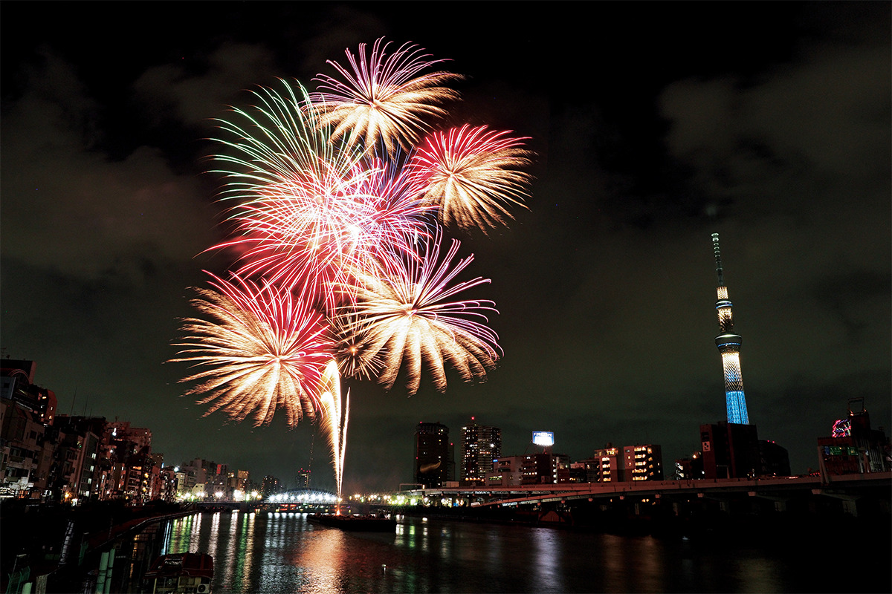
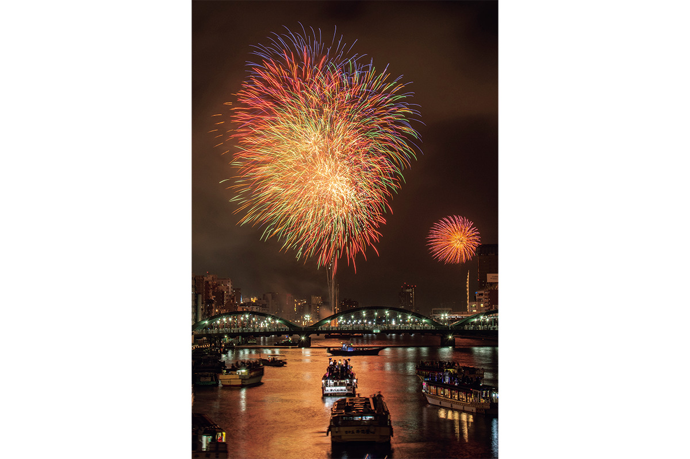
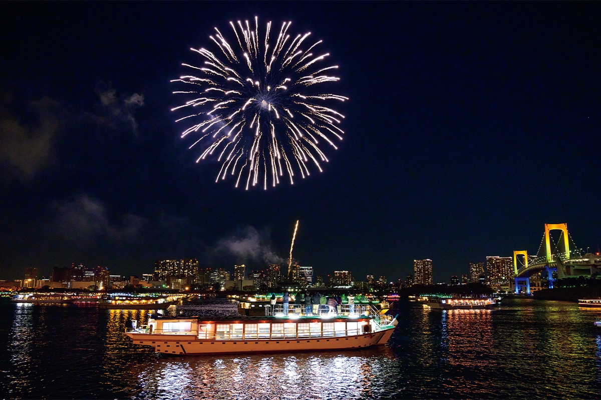

Токио · Асакуса и Сумида · праздник
Фейерверк на реке Сумида: двадцать тысяч залпов над летним Токио

Каждое лето над рекой Сумида запускают около двадцати тысяч зарядов, и посмотреть на них приходит больше миллиона человек. Это главный фейерверк Токио и один из самых больших в Японии.
Праздник
Двадцать тысяч залпов в двух местах
Когда в Токио говорят о летнем фейерверке, первым вспоминают праздник на реке Сумида. За вечер здесь запускают около 20 000 зарядов, а зрителей собирается больше миллиона. Это один из крупнейших фейерверков в Японии.
Откуда он взялся, точно не знает никто: версий несколько. Ещё до эпохи Мэйдзи (1868–1912) жители Эдо, старого Токио, любили праздник открытия реки, Рёгоку кавабираки. Его рисовали на цветных гравюрах Кацусика Хокусай (1760–1849), самый известный в мире мастер укиё-э, и Хиросигэ Утагава (1797–1858), автор знаменитых серий пейзажей. Хокусаю посвящён музей в районе Сумида.
Запускали огни мастерские «Кагия» и «Тамая», лучшие фейерверкеры того времени. Отсюда пошёл обычай: при каждом залпе зрители кричат «Кагия!» и «Тамая!».

В годы бурного экономического роста вода в Сумиде стала такой грязной, что праздник прервали. В 1978 году его возродили под новым названием «Фейерверк на реке Сумида». Залпы дают с двух площадок на берегах реки: первая у моста Сакурабаси в районе Сумида, вторая у моста Умаябаси в районе Тайто. В 2026 году фейерверк прошёл 25 июля.
Совет
Огни, отражённые в реке
Знаток японских праздников советует помнить, чем была Сумида для горожан Эдо. По ней возили грузы, и на ней же катались на лодках для удовольствия. Праздник открытия реки был тесно связан с этими развлечениями, поэтому часто становился сюжетом гравюр. В серии Хиросигэ «Сто знаменитых видов Эдо» огни над рекой нарисованы вместе с прогулочными лодками. Берега Сумиды с тех пор сильно изменились, но огни фейерверка отражаются в её воде так же, как во времена Эдо.
Лодки
Фейерверк с палубы якатабунэ
На берегах Сумиды в вечер фейерверка тесно в любом месте. Тем, кто хочет смотреть спокойно, стоит выбрать якатабунэ, крытую прогулочную лодку. Все лодочные компании делают к этому вечеру особые программы, и на борту легко почувствовать настроение старого Эдо.

К 2024 году такие лодки стали очень популярны: места на всех, похоже, были распроданы, так что бронировать лучше заранее.
Фейерверк на реке Сумида
- Даты
- 25 июля 2026 года (суббота)
- Адрес
- первая площадка: Токио, Сумида, у моста Сакурабаси; вторая площадка: Токио, Тайто, у моста Умаябаси
- Как добраться
- к первой площадке пешком от станций Асакуса, Осиагэ, Tokyo Skytree и Хикифунэ; ко второй пешком от станций Асакуса, Асакусабаси, Курамаэ и Рёгоку
Фото: администрация района Тайто.